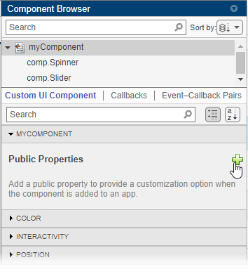
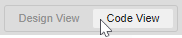
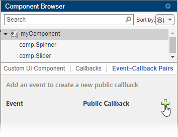
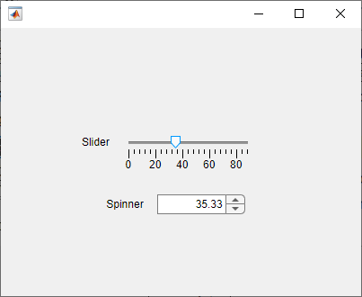
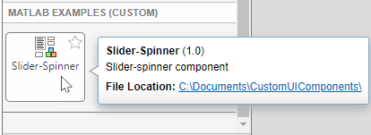
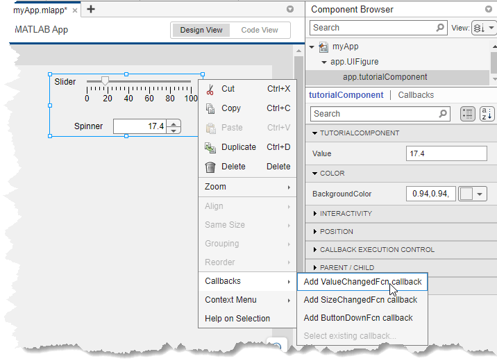

Create a Simple Custom UI Component in App Designer
In addition to the UI components that MATLAB® provides for building apps, you can create custom UI components to use in your own apps or to share with others. Starting in R2022a, you can interactively create custom UI components in App Designer.
Some benefits of creating custom UI components include:
Modularization — Separate the display and code of large apps into independent, maintainable pieces.
Reusability — Provide a convenient interface for adding and customizing similar components in apps.
Flexibility — Extend the appearance and behavior of existing UI components.
Component Creation Overview
When you design and create a custom UI component, there are two users of your component to consider: app creators and app users. App creators use your component when building an app, whereas app users interact with your component when running an app. Because these two types of users use your component in different ways, there are additional considerations to take into account when designing a custom component as opposed to designing an app.
To provide a good experience for app creators who use your component to build an app:
Provide an interface for users to customize the appearance and behavior of the component in an app by creating public properties.
Enable users to program a response to interactions with the component by creating public callbacks.
Ensure that the component is robust to the different ways in which users can incorporate it into their apps, and provide feedback, such as descriptive error messages, when a user attempts to use it in an unintended way.
To provide a good experience for app users who interact with your component in an app:
Design the component appearance so that users can understand its purpose.
Program the basic behavior of the component so that it is consistent across all apps that use it.
Learn how to create a custom UI component in App Designer by walking through the process of creating a slider-spinner UI component that provides a flexible interface to change a numeric value. When you have completed the process, you will be able to use the slider-spinner component in an App Designer app in the same way you use existing UI components.

You can either create the slider-spinner component by following the interactive tutorial in the App Designer environment or by following the steps on this page.
To run the interactive component tutorial in App Designer, open the App Designer Start Page. In the Custom UI Components section, click Show examples, and then select Interactive Component Tutorial.
 App Designer Component Tutorial Steps
App Designer Component Tutorial Steps
Create Custom UI Component
To create a custom UI component in App Designer, first open a new blank component.
Open the App Designer Start Page, and in the Custom UI Components
section, click Blank Component. Save the component file as
myComponent.mlapp. Then, follow these steps to build the
slider-spinner component with connected values:
Design Component Appearance — Lay out your custom component using existing UI components in App Designer Design View.
Design Component Interface — Provide options for an app creator to customize the appearance and behavior of your custom component to suit the needs of the app. Do this in two steps:
Create and Configure Public Properties — Enable the app creator to specify aspects of the component appearance and behavior in an app.
Create and Configure Public Callbacks — Enable the app creator to program a response when an app user interacts with the component in an app.
Verify Component Behavior — Ensure your custom component looks and behaves as intended.
Configure Component for Use in Apps — Specify how your custom component appears in the App Designer Component Library.
Design Component Appearance
Design your custom component appearance in Design View.
To design the slider-spinner appearance, first drag a Slider component from the Component Library onto the canvas. Then, drag a Spinner component onto the canvas and position it below the slider.
When you lay out your custom component in Design View, App Designer
generates the code that creates the underlying UI components in the setup function in
Code View. This function is run once when the custom component object
is created in an app. If you have additional startup tasks that you would like to execute
once at setup, such as plotting data or initializing default values, you can create a
PostSetupFcn callback for the custom component. For more information,
see Define Custom UI Component Startup Tasks in App Designer.
Design Component Interface
Design your custom component interface so that an app creator can specify how the component appears and behaves within their app. There are two aspects of the component interface to consider:
Public properties — These are properties of the component that can be set and queried when the component is added to an app. Create public properties to provide component customization options and to expose information about the component to an app creator.
Public callbacks — These are callbacks of the component that can be accessed when the component is added to an app. Create public callbacks to allow an app creator to program a response to a specific component interaction in the context of their app.
Create and Configure Public Properties
To add a public property to your custom component, first create the property and specify its default value, data type, and associated validation functions. Then, write code to connect the property value and the custom component appearance and behavior. Update the public property value when an app user interacts with the component, and update the underlying components when an app creator programmatically sets the public property value.
For the slider-spinner component, create a public property named
Value to allow app creators to set the slider-spinner value when they
use the component in app. Select the component node in the Component
Browser and click the  button.
button.

When you add a new public property, App Designer opens a dialog box that lets you specify property details. Fill out the dialog box with these values:
Name — Enter
Valueas the property name.Data Type — Enter
doubleas the property data type.Default Value — Enter
0as the default property value.
Click OK to create the property.
Once you create the Value public property, write code to link the
property to the slider-spinner component appearance. Navigate to Code
View using the button in the upper-right corner of the canvas.

When you create a custom UI component, App Designer creates a class definition file
with matlab.ui.componentcontainer.ComponentContainer as the superclass. Use the
Code View editor to write code to program your component in this
file. Access the custom component object in your code by using
comp.
First, update the Value property whenever an app user interacts
with the slider or the spinner. Perform this update using these steps:
Create a callback for the slider component. Right-click
comp.Sliderin the Component Browser and select Callbacks > Add ValueChangedFcn callback.Update the
Valueproperty within theSliderValueChangedcallback function. Replace the code in the callback function with this code:comp.Value = event.Source.Value;
Assign the same callback function to the spinner component. Right-click
comp.Spinnerin the Component Browser and select Callbacks > Select existing callback. Use the dialog box to assign theSliderValueChangedfunction to the spinnerValueChangedFcncallback.
At this point, your code updates the slider-spinner Value property
whenever the underlying component values change. Next, conversely, write code to update
the underlying spinner and slider components whenever an app creator sets the
slider-spinner Value property. Perform this update inside the
update function of your component code. The update
function executes whenever the value of a public property of the custom component changes,
so this ensures that the underlying spinner and slider values always match the value of
the custom component.
Add this code to the update
function:
comp.Slider.Value = comp.Value; comp.Spinner.Value = comp.Value;
For more information about creating and configuring public properties, see Create Public Properties for Custom UI Components in App Designer.
Create and Configure Public Callbacks
Create public callbacks for your custom component to enable app creators to write code in their apps to respond to specific interactions. To create a public callback, add an event. An event is a notice that is broadcast when an action occurs. When you add an event for your custom component, App Designer creates a public callback associated with the event. Then, write code to trigger the event, which executes the associated public callback.
In the slider-spinner component, create an event named ValueChanged
and write code to trigger the event and execute the associated
ValueChangedFcn callback whenever an app user changes the value of
the slider or the spinner in a running app. This step lets app creators use the
ValueChangedFcn callback in their app. For instance, an app creator
might write a callback function to plot some data whenever the app user changes the
slider-spinner value.
Use these steps to add and trigger the ValueChanged event:
Select the Event–Callback Pairs tab in the Component Browser and click the button.

In the Add Event–Public Callback Pair dialog box, enter the event name as
ValueChanged, and click OK. App Designer creates a public callback of the same name with the lettersFcnappended. So in this case, the public callback is namedValueChangedFcn.Write code to ensure that the callback is executed at the appropriate moment. Do this by calling the
notifyfunction on the component object and specifying the event name. Here, the callback should be executed when an app user interacts with the slider or the spinner. In theSliderValueChangedfunction, add this code:notify(comp,"ValueChanged")
For more information about creating and executing public callbacks, see Create Callbacks for Custom UI Components in App Designer.
Verify Component Behavior
To see what your component looks like in a running app, save the component and then
click  Run. App Designer displays a UI figure window that contains your
custom component.
Run. App Designer displays a UI figure window that contains your
custom component.
Run the slider-spinner component, and interact with it to verify that it looks and behaves as expected.

Next, verify that the ValueChangedFcn callback is executed when the
component value changes. Create an instance of your component programmatically by specifying
the component file name at the MATLAB Command Window and returning the component object as a variable. Enter this
code in the Command Window to create a slider-spinner component and assign a callback
function:
comp = myComponent; comp.ValueChangedFcn = @(src,event)disp(src.Value);
Configure Component for Use in Apps
To use your custom UI component in an App Designer app or to share it for others to use, follow these steps:
In the Designer tab, click
 Configure for Apps.
Configure for Apps.Fill out the App Designer Custom UI Component Metadata dialog box, and then click OK.
In the confirmation dialog box, click Add to Path to add the component and generated
resourcesfolder to the MATLAB path.In the Designer tab, click New and select Blank App.
The component appears in the Component Library of the app, under the category specified in the dialog box.

Drag a slider-spinner component onto the canvas. You can set public properties of the component using the Component Browser, and you can assign public callbacks to program the component behavior in the app.

For more information about configuring and sharing your custom UI component, see Configure Custom UI Components for App Designer.